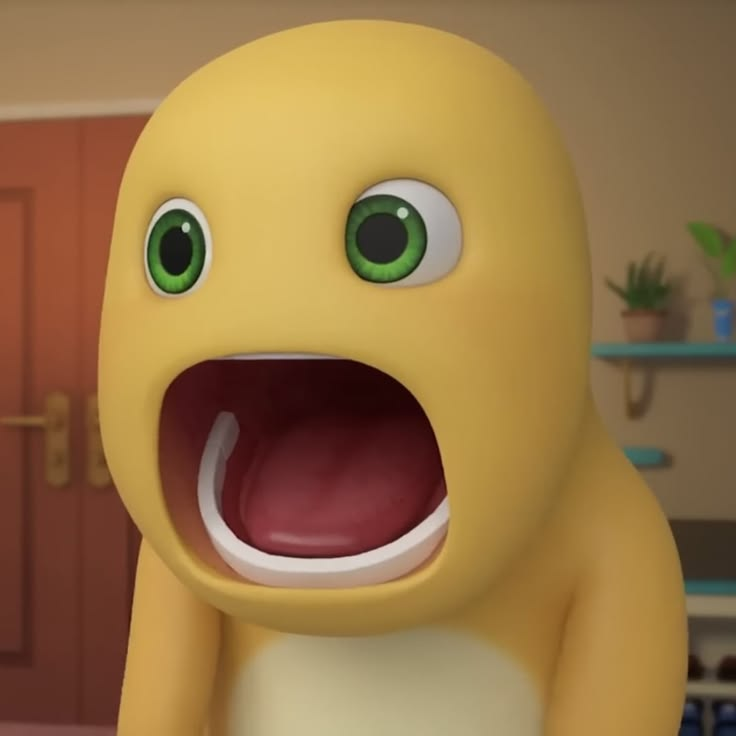
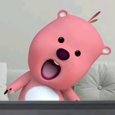

Maafin Aku Ya? 🥺
Sama kayak Loopy yang kadang galak tapi sebenernya butuh disayang, aku si Nailong ini juga butuh kamu banget. Maafin ego dan kesalahanku ya? Maukah kamu kasih satu kesempatan lagi buat kita ukir cerita lucu bareng-bareng lagi?


"Foto-foto ini saksinya kalau kita itu lucu banget pas bareng... ✨"